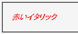

メディアタイプを特定させる構文である @media type { ～ } で括られた範囲内のスタイル指定が全て無視される。
<style type="text/css">
p.sample {
color: red;
}
@media screen {
p.sample {
font-style: italic;
}
}
</style>
<p class="sample">赤いイタリック</p>
赤いイタリック
screenメディアでは文字列が斜体で表示されるはずです。
WinIE6.0での表示（標準モード）
MacIEでバグを持つスタイル指定を@mediaで括ることによって、バグを回避することができます。
MacIEで発生する模様。